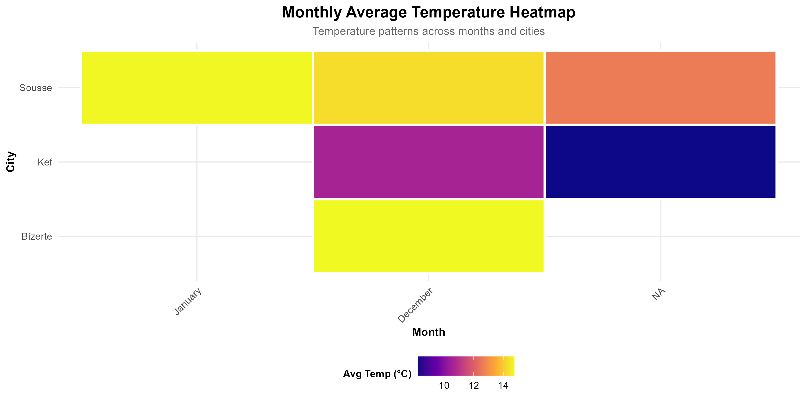

Code
```{r monthly-heatmap, fig.width=12, fig.height=6}
knitr::include_graphics(here("output", "figures", "09_monthly_heatmap.png"))
```
| Daily Temperature Variability | |||
| Range and standard deviation by city | |||
| city | avg_daily_range | max_daily_range | sd_daily_range |
|---|---|---|---|
| Bizerte | 7.69 | 11.10 | 3.28 |
| Kef | 10.44 | 18.20 | 5.92 |
| Sousse | 7.90 | 12.50 | 2.89 |
| Average Hourly Climate Patterns | ||||
| city | hour | avg_temp | avg_humidity | avg_solar |
|---|---|---|---|---|
| Bizerte | 0.00 | 12.50 | 100.00 | 0.00 |
| Bizerte | 1.00 | 13.32 | 95.67 | 0.08 |
| Bizerte | 2.00 | 13.15 | 99.10 | 0.00 |
| Bizerte | 3.00 | 12.95 | 96.24 | 0.00 |
| Bizerte | 4.00 | 9.30 | 100.00 | 0.00 |
| Bizerte | 5.00 | 12.77 | 96.95 | 0.08 |
| Bizerte | 6.00 | 9.60 | 100.00 | 0.00 |
| Bizerte | 7.00 | 12.23 | 97.32 | 0.00 |
| Bizerte | 8.00 | 10.27 | 100.00 | 26.33 |
| Bizerte | 9.00 | 13.42 | 96.08 | 143.33 |
| Bizerte | 10.00 | 14.50 | 96.30 | 137.00 |
| Bizerte | 11.00 | 16.11 | 86.66 | 306.00 |
| Bizerte | 12.00 | 16.35 | 87.75 | 241.50 |
| Bizerte | 13.00 | 18.35 | 76.87 | 358.75 |
| Bizerte | 14.00 | 18.25 | 82.90 | 411.50 |
| Bizerte | 15.00 | 19.36 | 67.78 | 203.00 |
| Bizerte | 16.00 | 17.70 | 78.80 | 93.00 |
| Bizerte | 17.00 | 16.88 | 81.08 | 2.83 |
| Bizerte | 18.00 | 14.93 | 92.40 | 0.00 |
| Bizerte | 19.00 | 15.41 | 89.43 | 0.08 |
| Bizerte | 20.00 | 15.10 | 90.60 | 0.00 |
| Bizerte | 21.00 | 14.49 | 94.76 | 0.00 |
| Bizerte | 22.00 | 14.20 | 100.00 | 0.00 |
| Bizerte | 23.00 | 13.86 | 97.04 | 0.00 |
```{r interactive-summary}
# Summary by city and season
climate_data %>%
group_by(city, season) %>%
summarise(
n = n(),
avg_temp = round(mean(temperature, na.rm = TRUE), 2),
sd_temp = round(sd(temperature, na.rm = TRUE), 2),
avg_humidity = round(mean(humidity, na.rm = TRUE), 2),
avg_wind = round(mean(wind_speed, na.rm = TRUE), 2),
.groups = "drop"
) %>%
gt() %>%
tab_header(title = "Climate Summary by City and Season") %>%
opt_stylize(style = 6, color = "green")
```| Climate Summary by City and Season | ||||||
| city | season | n | avg_temp | sd_temp | avg_humidity | avg_wind |
|---|---|---|---|---|---|---|
| Bizerte | Winter | 168 | 14.74 | 2.97 | 90.32 | 1.61 |
| Kef | Winter | 268 | 10.60 | 4.56 | 79.55 | 2.08 |
| Kef | NA | 1 | 8.24 | NA | 88.13 | 1.70 |
| Sousse | Winter | 635 | 14.38 | 3.45 | 74.81 | 1.19 |
| Sousse | NA | 1 | 12.60 | NA | 81.39 | 0.98 |
---
title: "Detailed Statistical Analysis"
---
## Monthly Trends Analysis
```{r setup, include=FALSE}
library(tidyverse)
library(lubridate)
library(here)
library(gt)
climate_data <- readRDS(here("data", "processed", "02_cleaned_data.rds"))
eda_results <- readRDS(here("data", "processed", "03_eda_results.rds"))
```
### Monthly Temperature Patterns
```{r monthly-heatmap, fig.width=12, fig.height=6}
knitr::include_graphics(here("output", "figures", "09_monthly_heatmap.png"))
```
### Comprehensive Dashboard
```{r dashboard, fig.width=14, fig.height=10}
knitr::include_graphics(here("output", "figures", "11_comprehensive_dashboard.png"))
```
## Statistical Tests
### Temperature Variability
```{r temp-variability}
eda_results$temp_variability %>%
gt() %>%
tab_header(
title = "Daily Temperature Variability",
subtitle = "Range and standard deviation by city"
) %>%
fmt_number(decimals = 2) %>%
opt_stylize(style = 6, color = "blue")
```
### Hourly Patterns
```{r hourly-patterns}
head(eda_results$hourly_patterns, 24) %>%
gt() %>%
tab_header(title = "Average Hourly Climate Patterns") %>%
fmt_number(decimals = 2) %>%
opt_stylize(style = 6, color = "cyan")
```
## Interactive Data Exploration
```{r interactive-summary}
# Summary by city and season
climate_data %>%
group_by(city, season) %>%
summarise(
n = n(),
avg_temp = round(mean(temperature, na.rm = TRUE), 2),
sd_temp = round(sd(temperature, na.rm = TRUE), 2),
avg_humidity = round(mean(humidity, na.rm = TRUE), 2),
avg_wind = round(mean(wind_speed, na.rm = TRUE), 2),
.groups = "drop"
) %>%
gt() %>%
tab_header(title = "Climate Summary by City and Season") %>%
opt_stylize(style = 6, color = "green")
```